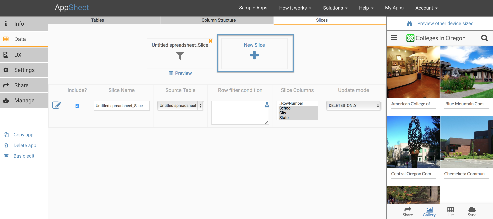

Using multiple slices – AppSheet
Richer apps can use more than one table slice.
In the Advanced Editor>Data>Slices tab, click on 'New Slice' to add another data slice. It automatically gets added to your app when you save your changes. You can now define control views over this slice as well.

Table slices have a source table, an optional row filter condition, and optionally specify a subset of columns.
Please be careful editing table slice definitions in the Advanced Editor. Slices without a source table or with an invalid source table name will lead to errors in your app.